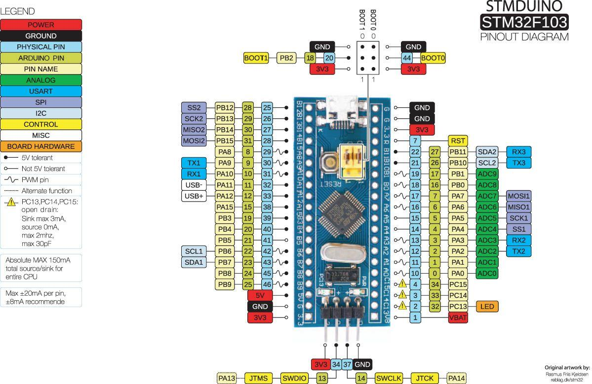
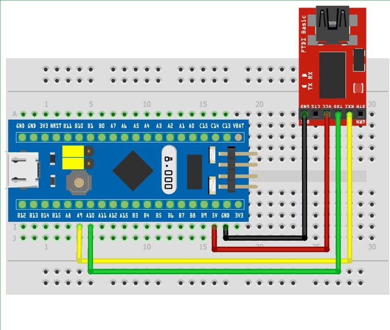
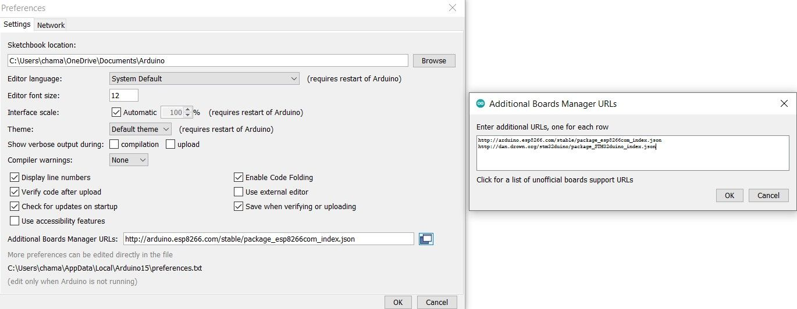
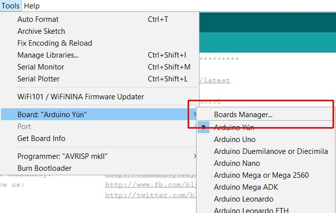
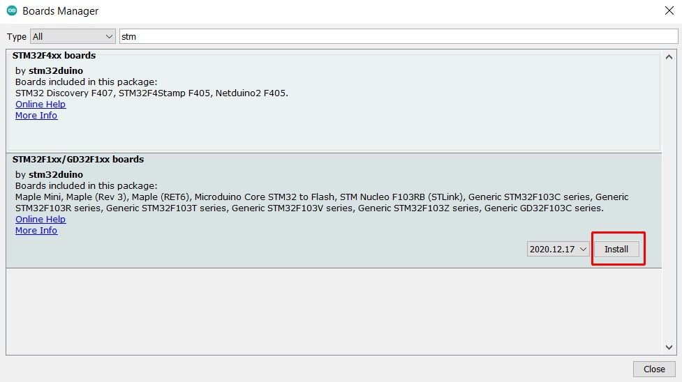
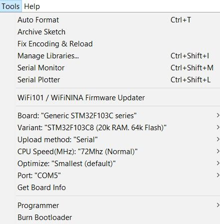
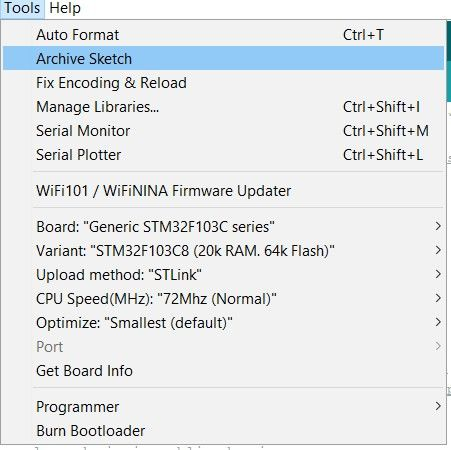

STM32
I was looking for a faster microcontroller and with help of many I choose STM32 as the solution.So now you know STM32 is faster than AVR based Arduino MCUs.
As I told you I choosed STM32f103 MCU base develpment board called STM bluepill. They are widely available in any region with very low price. It may be cloned, but works same in many cases.In this article I will explaine how to configure perfect environment for work with STM32 bluepill. There are many environments to configure such as CubeIDE, VSCODE + PlatformIO extention, Atom + PlatformIO extention. But here we are using the Arduino IDE.
This MCU are 32bit based and have large RAM/ROM compared to AVR based Arduino. I will discuss about MCUs in another article soon.

So let's make it work.
You may required these.
-
STM32 Development Board -
FTDI Programmer or STLink -
a Breadboard* -
Some Jumper wires -
a Laptop
With FTDI programmer
connect FTDI to STM using jumpers.
| FTDI | STM |
|---|---|
| VCC | 5V |
| GND | GND |
| RX | A9 |
| TX | A10 |

-
Go to Arduino IDE. Files > Preferences.
-
Paste this URL in the Additional Board Manager URLs tab > OK
http://dan.drown.org/stm32duino/package_STM32duino_index.json
(if there are some links already use the button to exoand the window then paste the link.)
-
Go to Tools > Boards > Board Manager.

- Search for
stm. Click install.

- Set settings as following for FTDI.

- Select the COM port.
- read the last steps before upload
With STLink
only few steps have to change from above. Im currently using a Windows Laptop.so some of these steps may chang for Mac OS Laptops.
- Download necessary drivers for STLink first. Install it. When you plug the STLINK to your computer after that it may look like this. ( for older STLinks use STSW-LINK007 )
-
Go to Arduino IDE. Files > Preferences.
-
Paste this URL in the Additional Board Manager URLs tab > OK
http://dan.drown.org/stm32duino/package_STM32duino_index.json(if there are some links already use the button to exoand the window then paste the link.)
-
Go to Tools > Boards > Board Manager.
- Search for
stm. Click install.
- Set settings as following for STLink.

- Select the COM port.
last steps.
Have you notices that, there are 2 male headers marked as BOOT0, BOOT1. Read this part carefully. Using these 2 BOOT pins we can configure BOOT memories.
| BOOT1 | BOOT0 | BOOT MODE |
|---|---|---|
| x | 0 | Main Flash memory |
| 0 | 1 | System memory |
| 1 | 1 | Embedded SRAM |
To upload code to flash memory ,
- Set BOOT0 --> 1 | BOOT1 --> 0.
After upload the code,
- set BOOT0 --> 0 .
By this we only reprogram flash memory.
Why don't we upload codes via USB code directly ?
simple answer. Upload through USB require a Bootloader, which not include when we purchase this MCU. Wecan flash the Bootloader by one of above methods. Then we can use USB port for upload the code. I will upload descriptive article for that task.
stay tuned